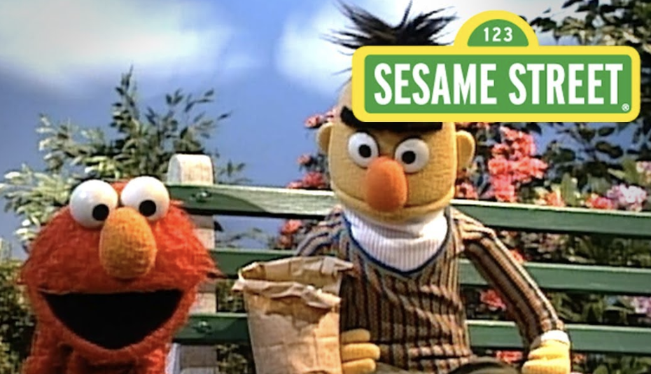
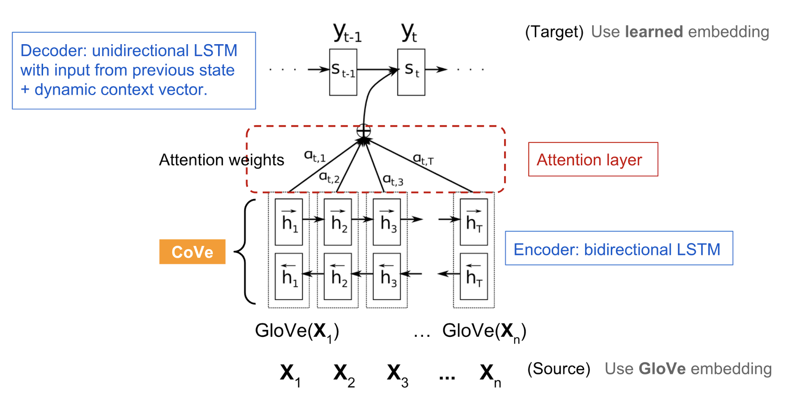
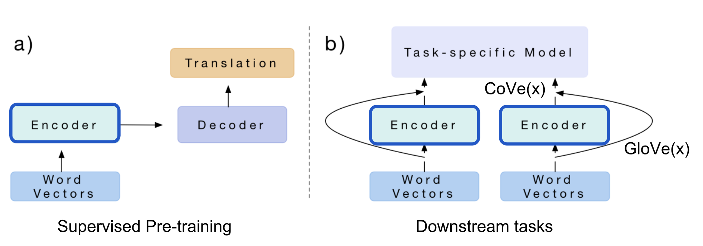
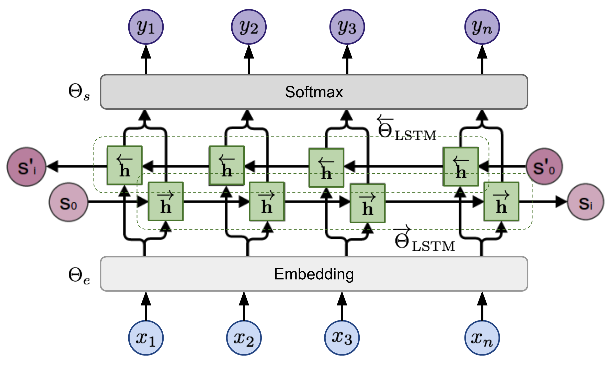
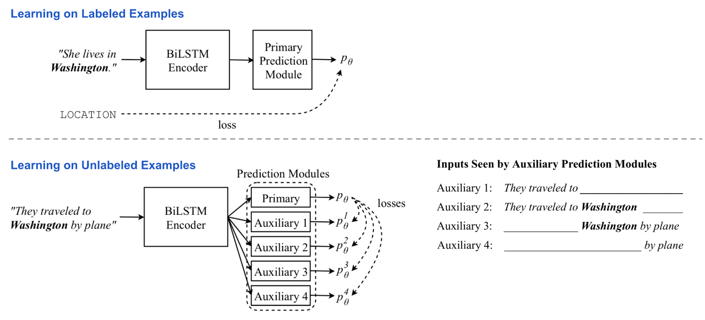
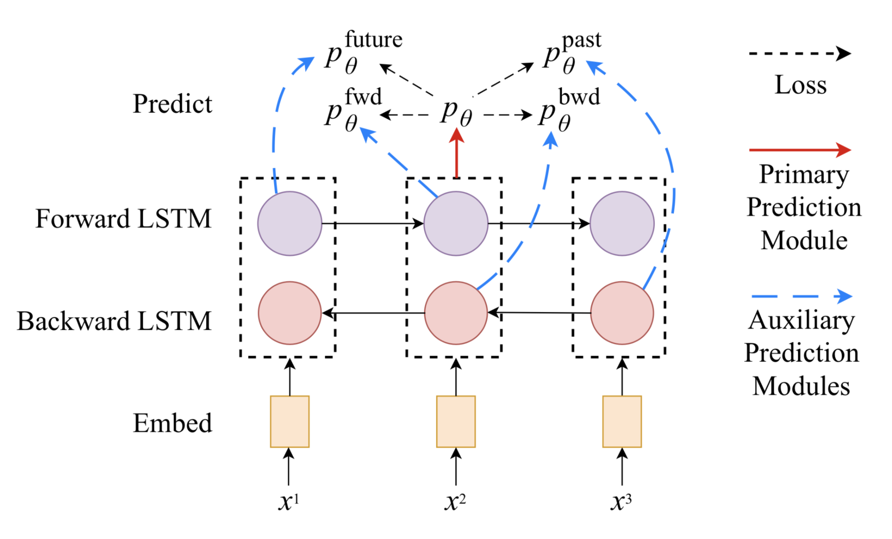
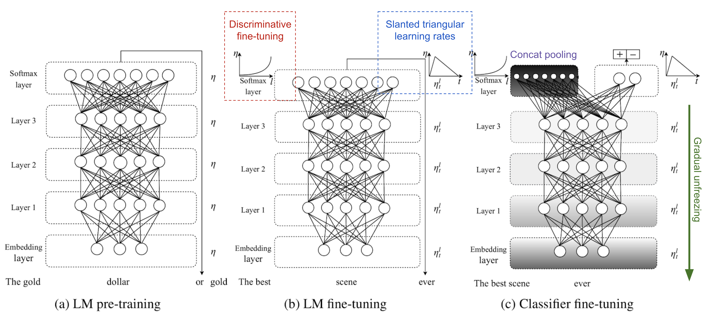
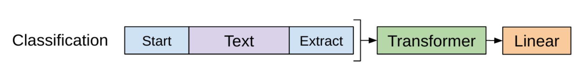

目录
[2019-02-14 更新：新增 ULMFiT 和 GPT-2。] [2020-02-29 更新：新增 ALBERT。] [2020-10-25 更新：新增 RoBERTa。] [2020-12-13 更新：新增 T5。] [2020-12-30 更新：新增 GPT-3。] [2021-11-13 更新：新增 XLNet、BART 和 ELECTRA；同时更新了总结部分。]

2018 年自然语言处理领域取得了令人惊叹的进展。像 OpenAI GPT 和 BERT 这样的大规模预训练语言模型，在各种语言任务上使用通用模型架构就取得了极佳性能。其核心思想与 ImageNet 分类预训练对许多视觉任务的帮助类似（*）。比视觉分类预训练更好的是，这种在 NLP 中简单而强大的方法不需要带标签的数据来进行预训练，从而让我们能够不断扩大训练规模，直至硬件极限。
(*) He et al. (2018) 发现，对于图像分割任务，预训练可能并不是必需的。
在我之前关于 NLP 的文章中，介绍的嵌入并不是上下文特定的——它们是基于单词共现学到的，而没有考虑序列上下文。因此在“我正在吃一个苹果”和“我有一部 Apple 手机”这两句话中，两个“apple”指代完全不同的事物，但它们却会共享相同的词嵌入向量。词嵌入学习
尽管如此，早期将词嵌入用于解决问题的方式是将其作为现有任务特定模型的额外特征，这种改进效果本质上是受限的。
在这篇文章中，我们将讨论各种方法如何被提出，使嵌入能够依赖于上下文，并让它们能以更通用、更简单、更廉价的方式应用于下游任务。
CoVe#
CoVe（McCann et al. 2017），全称 Contextual Word Vectors（上下文词向量），是一种由 机器翻译模型中的编码器学习得到的词嵌入。与之前传统词嵌入不同，CoVe 词表示是整个输入句子的函数。注意？注意！词嵌入学习
神经机器翻译回顾#
这里的神经机器翻译（NMT）模型由一个标准的双层双向 LSTM 编码器和一个带注意力的双层单向 LSTM 解码器组成。它在英德翻译任务上进行预训练。编码器学习并优化英语单词的嵌入向量，以便将其翻译成德语。基于“编码器在把单词转换成另一种语言之前应该捕捉高层语义和句法意义”的直觉，编码器的输出被用来为各种下游语言任务提供上下文相关的词嵌入。

在下游任务中使用 CoVe#
NMT 编码器的隐藏状态被定义为其他语言任务的上下文向量：
论文提出在问答和分类任务中使用 GloVe 和 CoVe 的拼接。GloVe 从全局词共现比率中学习，因此没有句子上下文；而 CoVe 通过处理文本序列生成，能够捕捉上下文信息。
对于给定的下游任务，我们首先生成输入单词的 GloVe + CoVe 拼接向量，然后将它们作为额外特征输入到特定于任务的模型中。

总结：CoVe 的局限性显而易见：（1）预训练受限于有监督翻译任务的可用数据集；（2）CoVe 对最终性能的贡献受任务特定模型架构的制约。
在后续部分我们将看到，ELMo 通过无监督预训练解决了问题（1），而 OpenAI GPT 和 BERT 则通过无监督预训练 + 使用生成式模型架构进一步同时解决了这两个问题。
ELMo#
ELMo，全称 Embeddings from Language Model（Peters 等, 2018），通过以无监督方式预训练语言模型来学习上下文相关的词表示。
双向语言模型#
双向语言模型（biLM）是 ELMo 的基础。当输入是一个由 n 个 token 组成的序列 (x_1, \dots, x_n) 时，语言模型学会根据历史预测下一个 token 的概率。
在前向传递中，历史包含目标 token 之前的单词，
在后向传递中，历史包含目标 token 之后的单词，
两个方向的预测都由多层 LSTM 建模，对于第 \ell=1,\dots,L 层的输入 token x_i，其隐藏状态为 \overrightarrow{\mathbf{h}}_{i,\ell} 和 \overleftarrow{\mathbf{h}}_{i,\ell}。 最后一层的隐藏状态 \mathbf{h}_{i,L} = [\overrightarrow{\mathbf{h}}_{i,L}; \overleftarrow{\mathbf{h}}_{i,L}] 在 softmax 归一化后用于输出 token 上的概率分布。它们共享嵌入层和 softmax 层，分别由 \Theta_e 和 \Theta_s 参数化。

模型训练目标是在两个方向上最小化负对数似然（即最大化真实词的对数似然）：
ELMo 表示#
在 L 层 biLM 的基础上，ELMo 通过学习特定于任务的线性组合，将所有层的隐藏状态叠加在一起。token x_i 的隐藏状态表示包含 2L+1 个向量：
其中 \mathbf{h}_{0, \ell} 是嵌入层输出，\mathbf{h}_{i, \ell} = [\overrightarrow{\mathbf{h}}_{i,\ell}; \overleftarrow{\mathbf{h}}_{i,\ell}]。
线性组合中的权重 \mathbf{s}^\text{task} 对每个终端任务单独学习，并通过 softmax 进行归一化。缩放因子 \gamma^\text{task} 用于修正 biLM 隐藏状态分布与任务特定表示分布之间的不匹配。
为了评估不同层隐藏状态捕捉了何种信息，ELMo 分别在语义密集型和句法密集型任务上，使用 biLM 不同层的表示进行了测试：
对比研究表明，句法信息在较低层得到更好的表示，而语义信息则由较高层捕捉。由于不同层倾向于承载不同类型的信息，将它们叠加在一起是有帮助的。
在下游任务中使用 ELMo#
与 CoVe 能帮助不同下游任务的方式类似，ELMo 嵌入向量被加入到任务特定模型的输入或较低层。此外，对于某些任务（例如 SNLI 和 SQuAD，但不包括 SRL），将其加入到输出层也有帮助。
ELMo 带来的改进在监督数据集较小的任务上最为显著。有了 ELMo，我们还能用少得多的标注数据达到相近的性能。
总结：语言模型预训练是无监督的，理论上可以尽可能扩大规模，因为无标签文本语料极其丰富。然而，它仍然依赖于为任务定制的模型，因此改进只是增量的，而为每个任务寻找一个好的模型架构仍然不是一件容易的事。
Cross-View Training#
在 ELMo 中，无监督预训练和特定任务学习发生在两个独立模型的两个独立训练阶段。Cross-View Training（简称 CVT；Clark 等, 2018）将二者统一到一个半监督学习过程中，通过带标签数据的监督学习和无标签数据的辅助任务无监督学习，共同改进双向 LSTM 编码器的表示。
模型架构#
模型由一个两层双向 LSTM 编码器和一个主要预测模块组成。在训练过程中，模型交替接收带标签和无标签的数据批次。

多任务学习#
当同时训练多个任务时，CVT 会为额外任务添加几个额外的主要预测模型。它们都共享同一个句子表示编码器。 在监督训练中，一旦随机选择一个任务，就更新其对应的预测器和表示编码器中的参数。 使用无标签数据样本时，编码器通过最小化每个任务的辅助输出与主要预测之间的差异，在所有任务上联合优化。
多任务学习鼓励表示具有更好的泛化性，同时产生了一个很好的副产品：来自无标签数据的“全任务标注”样本。考虑到跨任务标签很有用但相当稀缺，这些数据标签非常宝贵。
在下游任务中使用 CVT#
理论上主要预测模块可以采用任意形式，可以是通用的也可以是任务特定的。CVT 论文中展示的例子同时包含了这两种情况。
在序列标注任务（对每个 token 进行分类）如 NER 或 POS 标注中，预测器模块包含两个全连接层和一个 softmax 层，用于在输出上产生类别标签的概率分布。 对于每个 token \mathbf{x}_i，我们取其在两层中的对应隐藏状态 \mathbf{h}_1^{(i)} 和 \mathbf{h}_2^{(i)}：
辅助任务只接收第一层的前向或后向 LSTM 状态。因为它们只能观察到部分上下文（左边或右边），所以必须像语言模型一样学习，即根据上下文预测下一个 token。前向和后向辅助任务只取一个方向，而未来和过去任务则分别在前向和后向方向上再多看一步。

注意，如果主要预测模块有 dropout，那么在用带标签数据训练时 dropout 层正常工作，但在用无标签数据训练生成“软”目标供辅助任务使用时则不应用 dropout。
在机器翻译任务中，主要预测模块被替换为带注意力的标准单向 LSTM 解码器。有两个辅助任务：（1）对注意力权重向量施加 dropout，随机将部分值置零；（2）预测目标序列中的未来词。辅助任务需要匹配的主要预测，是使用固定的主要解码器在输入序列上通过 束搜索 得到的最佳预测目标序列。
ULMFiT#
使用生成式预训练语言模型 + 任务特定微调的想法最早在 ULMFiT（Howard & Ruder, 2018）中得到探索，其直接灵感来自 ImageNet 预训练在计算机视觉任务上的成功。其基础模型是 AWD-LSTM。
ULMFiT 通过三个步骤在下游语言分类任务上取得良好的迁移学习效果：

GPT#
遵循与 ELMo 类似的想法，OpenAI GPT（全称 Generative Pre-training Transformer，Radford 等, 2018）通过在一个巨型免费文本语料集合上训练，将无监督语言模型扩展到更大规模。尽管有相似之处，GPT 与 ELMo 存在两个主要区别。
作为语言模型的 Transformer 解码器#
与 原始 Transformer 架构相比，Transformer 解码器 模型去掉了编码器部分，因此只有一个单独的输入句子，而不是两个独立的源序列和目标序列。
该模型在输入序列的嵌入上应用多个 Transformer 块。每个块包含一个带掩码的多头自注意力层和一个逐点前馈层。最终输出在 softmax 归一化后产生目标 token 的分布。
损失函数是负对数似然，与 ELMo 相同，但没有后向计算。假设大小为 k 的上下文窗口位于目标词之前，则损失函数如下：
字节对编码#
字节对编码（BPE）用于编码输入序列。BPE 最初在 20 世纪 90 年代被提出作为一种数据压缩算法，后来被采用来解决机器翻译中的开放词汇问题，因为翻译到新语言时很容易遇到生僻词和未知词。基于“生僻词和未知词通常可以分解为多个子词”的直觉，BPE 通过迭代地、贪心地合并频繁出现的字符对，来找到最佳的单词切分方式。
有监督微调#
OpenAI GPT 提出的最重要升级，是彻底摆脱任务特定模型，直接使用预训练的语言模型！
以分类任务为例。假设在标注数据集中，每个输入有 n 个 token \mathbf{x} = (x_1, \dots, x_n)，以及一个标签 y。GPT 首先将输入序列 \mathbf{x} 通过预训练的 Transformer 解码器处理，最后一层对最后一个 token x_n 的输出是 \mathbf{h}_L^{(n)}。然后只需要新增一个可训练的权重矩阵 \mathbf{W}_y，就能预测类别标签的分布。
